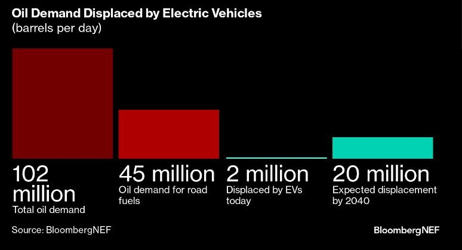
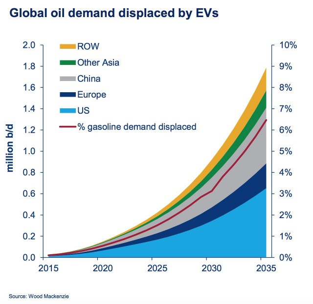

The rise of electric vehicles (EVs) is transforming the global energy landscape, significantly impacting oil demand and geopolitics. As the world shifts towards electrification, traditional oil-producing nations face challenges, while new players emerge in the EV market. This newsletter explores the current trends, future projections, and geopolitical implications of the EV revolution.
The Decline of Oil Demand
EV Adoption and Reduced Oil Consumption
The increasing market penetration of electric cars is a direct factor in reducing oil demand. With improved battery technology, enhanced charging infrastructure, and government incentives, EV sales are expected to grow exponentially. According to the International Energy Agency (IEA), EVs could displace over 5 million barrels per day (mb/d) of oil consumption by 2030.
The burgeoning growth of EVs presents a potential challenge for the oil and gas industry. Global EV sales are expected to hit 10 million by 2025, potentially reducing oil demand by 350,000 barrels per day. This surge in popularity could dramatically alter oil consumption patterns, with projections suggesting that by 2040, EVs could displace over 20 million barrels of oil daily.
Effect on Oil-Dependent Economies
Countries that rely heavily on petroleum exports, such as Saudi Arabia, Russia, and Venezuela, must adapt to the declining demand for fossil fuels. The reduction in revenue can lead to economic instability, forcing these nations to diversify their economies or risk long-term financial crises.

Geopolitical Shifts Due to EV Growth
Shifting Power from Oil-Producing to Tech-Driven Nations
As oil loses its dominance, nations leading in battery production, lithium mining, and renewable energy will become the new global power players. Countries like China, the United States, and Germany are positioning themselves at the forefront of the EV supply chain, gaining economic and strategic leverage over traditional oil exporters.
China’s Dominance in Battery Supply Chains
China controls a significant portion of the global lithium-ion battery market, securing raw materials such as lithium, cobalt, and nickel from countries like the Democratic Republic of Congo (DRC) and Australia. This dominance in battery production strengthens China's influence in the global energy transition, challenging the geopolitical standing of traditional oil exporters.
Impact on Global Energy Markets
Oil Price Volatility and Market Uncertainty
With declining oil consumption, prices could become increasingly volatile, as demand unpredictability leads to fluctuations. OPEC and other oil-producing nations will need to adjust production strategies to stabilize markets, potentially reducing output to maintain higher prices.
Increased Investments in Renewable Energy
The shift away from oil encourages massive investments in solar, wind, and hydroelectric power. Countries prioritizing renewable energy infrastructure will reduce their dependence on fossil fuels, further accelerating the decline in oil demand and reshaping the global energy economy.

Challenges and Opportunities in the EV Transition
Challenges Faced by Oil-Rich Nations
- Revenue Decline: Reduced oil sales impact government budgets, particularly in oil-dependent economies.
- Workforce Transition: Millions of jobs in oil extraction, refining, and transportation could be affected.
- Infrastructure Adaptation: Countries must shift investments from oil refineries to EV and battery technologies.
Opportunities for Emerging Economies
- Lithium and Rare Earth Mineral Boom: Countries rich in lithium, cobalt, and nickel will experience economic growth.
- EV Manufacturing and Job Creation: Investments in EV factories and battery plants create high-tech employment opportunities.
- Green Energy Leadership: Nations leading in clean energy development will dominate the future global economy.
Conclusion
The impact of electric vehicles on oil demand and geopolitics is profound and irreversible. As EV adoption increases, the world is witnessing a major shift in economic power, favoring nations that embrace clean energy and technological innovation. Traditional oil-exporting countries must diversify their economies to remain relevant in a rapidly changing energy landscape.